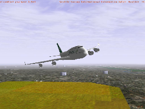

The FlightGear Manual
Michael Basler, Martin Spott,
Stuart Buchanan, Jon Berndt,
Bernhard Buckel, Cameron Moore,
Curt Olson, Dave Perry,
Michael Selig, Darrell Walisser,
and others

The FlightGear Manual version 1.0
December 17, 2007
For FlightGear version 1.0